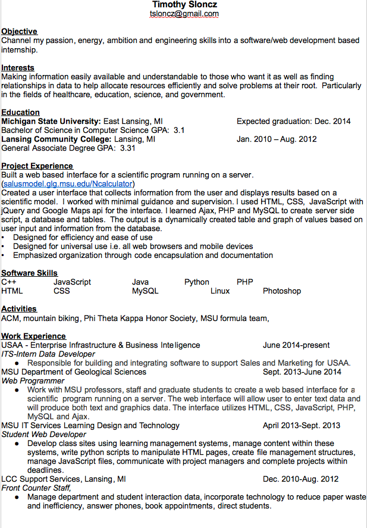

Challenges challenges challenges. I try not to shy away from challenges. How else do you figure out how far you can go? I've worked most of my way through school to get a leg up on funds and experience. I'm currently taking all online classes because I live in San Antonio Texas while interning for USAA! More on my resume below...
